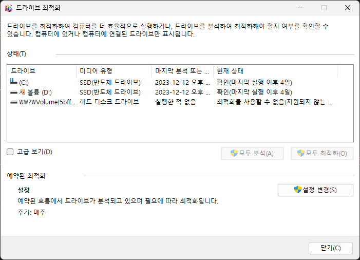

드라이브 조각 모음
- Increase storage reading/writing speed
드라이브에 저장되어있는 데이터를 저장하고 삭제하기를 반복하다 보면,
필요한 정보가 물리적으로 흩어지는 경우가 생깁니다.
그렇게 되면 정보를 읽어오는 시간이 길어지고, 그만큼 PC의 사용이 불편해질 수 있습니다.
그럴때 사용하는 기능이 드라이브 조각 모음으로, 데이터의 위치를 조정하는 방식으로
데이터 입출력 속도를 올려줍니다.

위의 이미지처럼 윈도우 검색기능에서 '드라이브 조각 모음 및 최적화'를 선택해 사용할 수 있으며,각 드라이브 별로 정리할 수 있습니다.
또한, 예약 설정을 통해 직접 하지 않아도 일정 주기로 자동으로 정리를 할 수 있습니다.
참고하실 점은, 디스크 정리 기능은 Windows 10과 11에서만 지원하며,
SSD를 사용하실 경우 크게 영향을 느끼지 못할 수 있습니다.
밑의 링크는 Microsoft의 디스크 정리 기능에 대한 공식적인 지원 글입니다.
official site